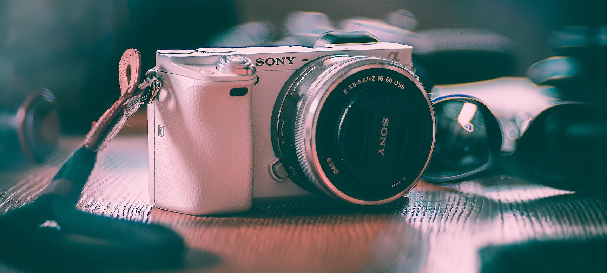
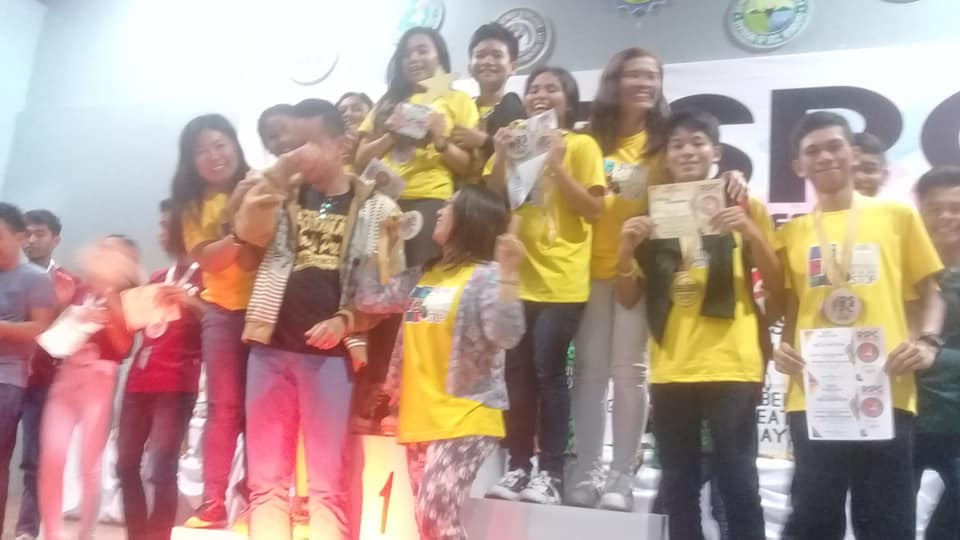

My career in campus journalism began during my final year of high school. It was one of the most memorable experiences I had in high school. As a photojournalist, I learnt a lot of things that shaped who I am now.
AWARDS
Municipal Schools Press Conference(MSPC) - CHAMPION
(2019,2020)
Division Schools Press Conference(DSPC) - CHAMPION
(2019), Participant
(2020)
Regional Schools Press Conference(RSPC) - Participant
(2019)